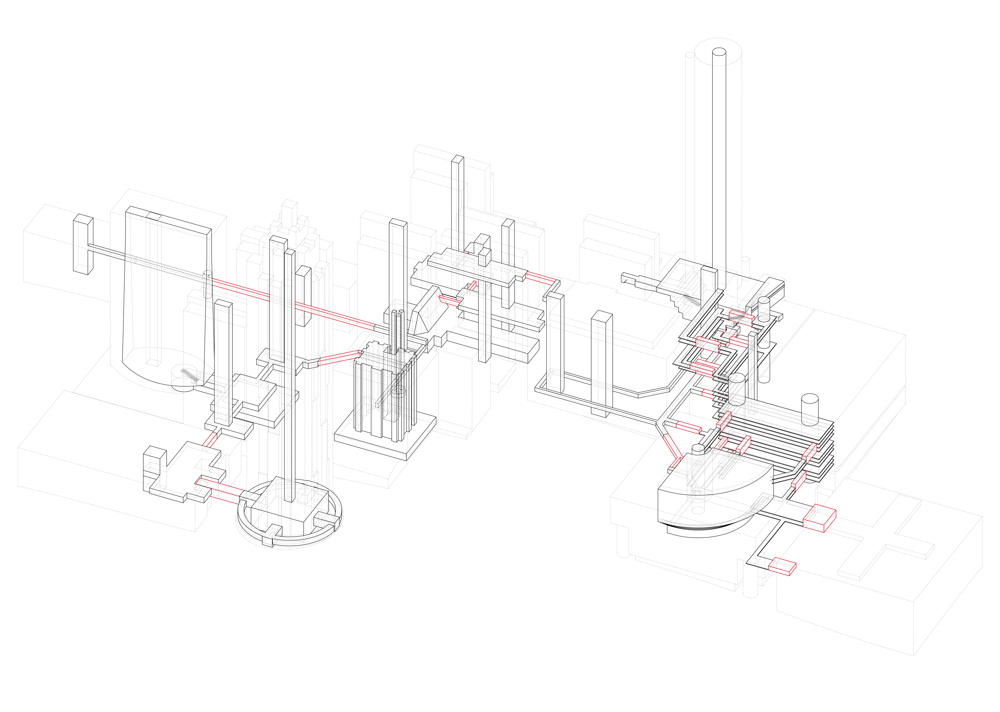
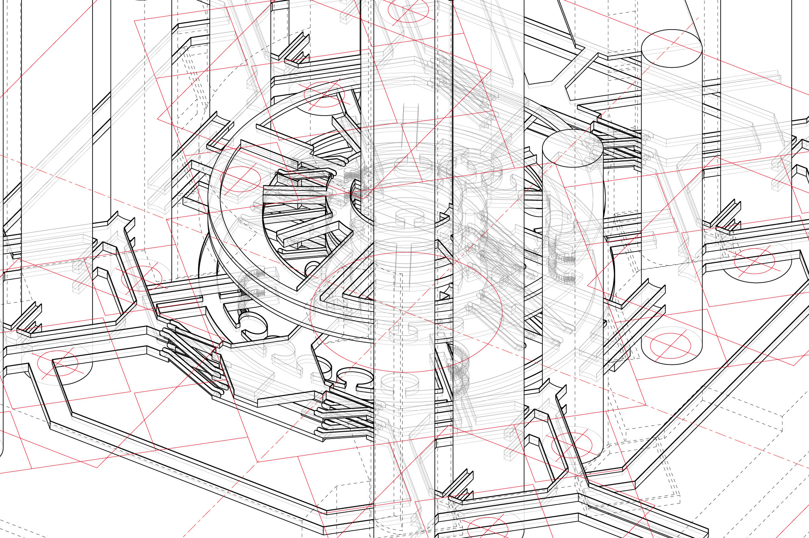
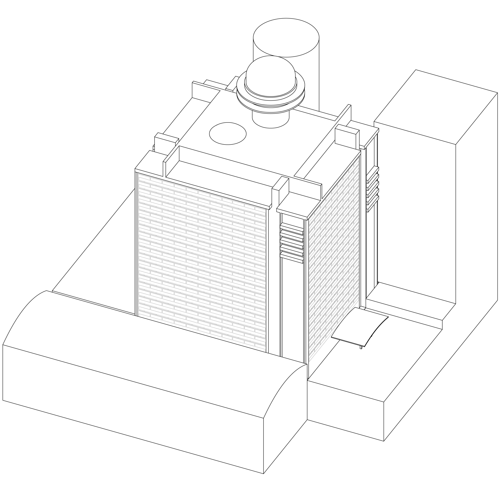
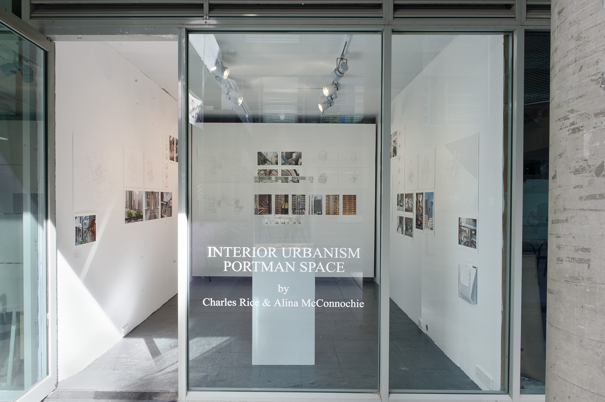

Los Angeles Bonaventure Circulation, Photograph by Charles Rice

Los Angeles Bonaventure Circulation, drawing by Alina McConnochie

Peachtree Centre Atlanta, photographs by Charles Rice



Hyatt Atlanta Envelope, drawing by Alina McConnochie

Photograph by Charles Rice